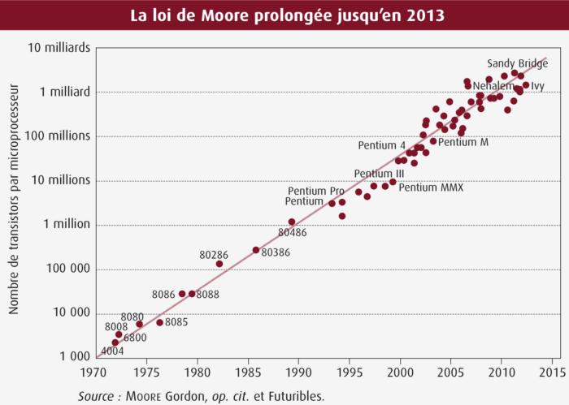

Le contexte actuel
Désormais, les processeurs ont atteint une finesse de gravure telle que nous commençons à atteindre un palier, nous pouvons mentionner la loi de Moore étant une prédiction estimant que le nombre de transistor doublera tout les 2 ans depuis 1970.
Comme visible sur le graphique si dessus cette prédiction s'est avérée véridique au fil des années. Cependant, il ne sera bientôt plus possible de rétrécir encore la taille du transistor pour des soucis physique. Le futur des microprocsseurs grand public pourrais alors potentiellement se tourner vers un nouveau domaine physique dont nous commençons la maitrise : la physique quantique.